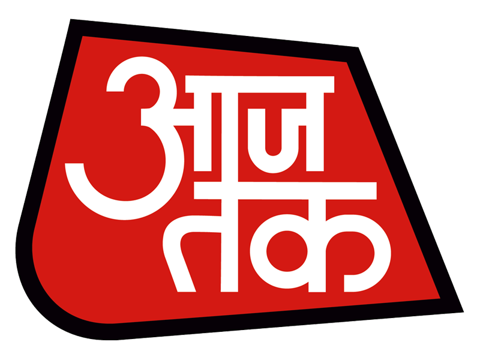
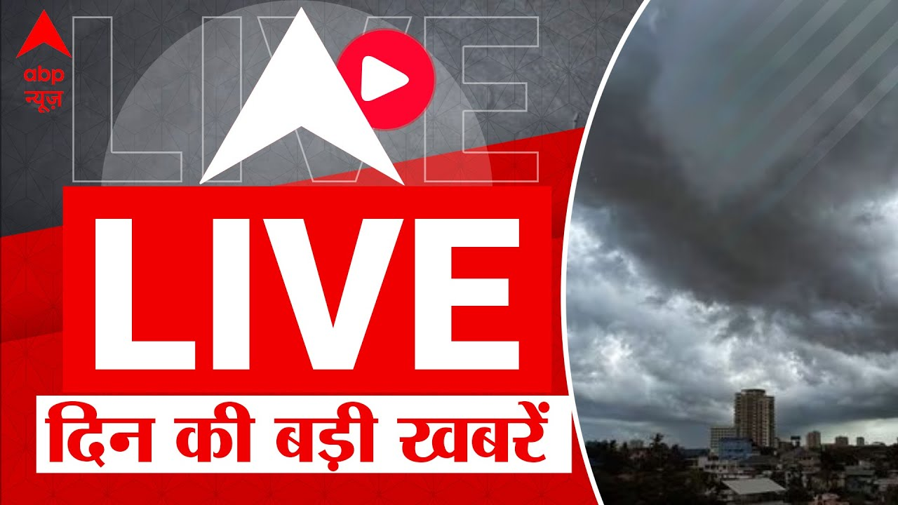
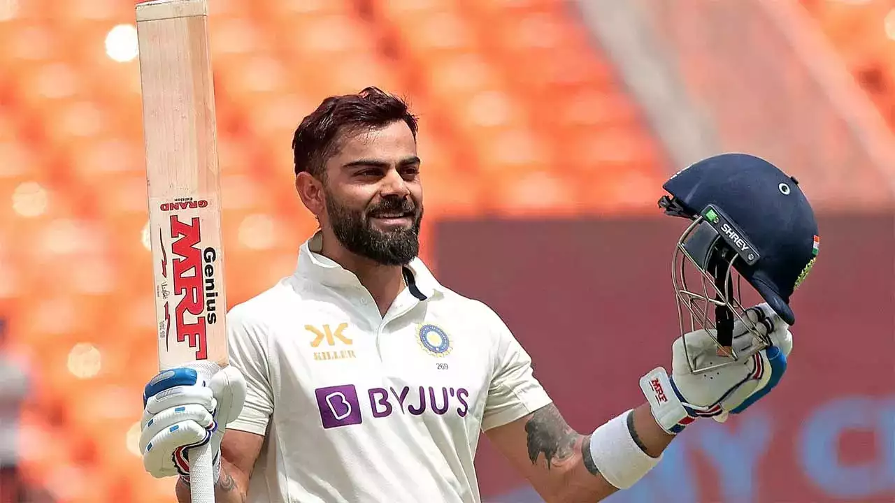

World View Express
Home
News
About
Contact
More
Sign-in
Feed
Previous
Next
**Title: World of Cricket Celebrates Spectacular Victories: IPL and World Cup 2023** *Date: July 31, 2023*
*By [World View Express]*
The cricketing world has been buzzing with excitement as several significant events unfolded, from the action-packed Indian Premier League (IPL) to the pinnacle of cricketing glory, the ICC World Cup 2023. Fans have been treated to breathtaking performances, nail-biting finishes, and inspiring displays of skill and determination. Let's delve into the latest updates and highlights from the world of cricket.
**IPL 2023: A Carnival of Cricket**
The 2023 Indian Premier League lived up to its reputation as one of the most thrilling T20 leagues in the world. Eight franchise teams battled it out in a two-month-long cricketing extravaganza, showcasing the best of talent from around the globe. Despite facing numerous challenges due to the COVID-19 pandemic, the tournament organizers ensured a safe and successful event.
Mumbai Indians, the reigning champions, emerged as the team to beat once again. Led by the charismatic Rohit Sharma, they displayed impeccable form, clinching their sixth IPL title with a stunning win in the final against the spirited Delhi Capitals. The ever-reliable Jasprit Bumrah spearheaded their bowling attack, earning the Purple Cap for being the tournament's leading wicket-taker.
Meanwhile, young batting sensation Shubman Gill, representing Kolkata Knight Riders, impressed everyone with his consistent performances, earning the Orange Cap for the highest run-scorer of the tournament. His mature approach and remarkable shot selection have made him a potential future star of Indian cricket.
**ICC World Cup 2023: Glorious Triumph and Heartbreaking Defeats**
The cricketing world turned its attention to the 50-over ICC World Cup 2023, held in India. The tournament featured intense competition, jaw-dropping moments, and a roller-coaster of emotions for players and fans alike.
In the grand finale at the historic Eden Gardens, two cricketing giants, India and England, locked horns in a high-voltage clash. India, led by the astute Virat Kohli, held their nerve to secure a memorable victory, lifting the coveted trophy for the third time in history. The team's all-around performance, with brilliant batting, fiery bowling, and razor-sharp fielding, made them the deserving champions.
Throughout the tournament, emerging cricketing nations impressed everyone with their passion and fighting spirit. Afghanistan's spin wizard Rashid Khan and Scotland's Kyle Coetzer were standout performers, earning accolades for their exceptional contributions to their respective teams.
**Retirement Announcements: Farewell to Legends**
As the World Cup came to a close, a few cricketing legends announced their retirements from international cricket, leaving fans teary-eyed but appreciative of their immense contributions.
Sri Lanka's spin maestro, Rangana Herath, who carried the legacy of Muttiah Muralitharan, bid adieu to the game with a reputation as one of the greatest left-arm spinners in history. His crafty deliveries and ability to outfox batsmen were a treat to watch.
Australia's wicketkeeper-batsman, Alex Carey, also announced his retirement, leaving a void in the team's middle order. Carey's agile glovework and calculated stroke-play earned him a place in the hearts of cricket enthusiasts worldwide.
**Looking Ahead: New Challenges and Excitement**
As the cricketing calendar marches on, fans eagerly anticipate more thrilling matches, domestic leagues, and T20 tournaments, keeping the spirit of cricket alive and vibrant. The focus will now shift to various bilateral series and the eagerly awaited Ashes series between England and Australia, promising more enthralling action in the months to come.
With young talents rising and established stars shining, the world of cricket is experiencing an incredible era, captivating audiences with its indomitable spirit and sheer brilliance on the field.
Stay tuned to our website for the latest updates, scores, and analysis on the ever-evolving world of sports, including cricket.
**Title: Global Affairs in the Spotlight: Current Events Shaping the World** *Date: July 31,2023*
*By [World View Express]*
In the fast-paced landscape of current affairs, significant events continue to unfold worldwide, shaping the geopolitical and socio-economic dynamics. From diplomatic breakthroughs to pressing challenges, here are some of the latest developments that are making headlines and capturing the world's attention.
**1. Israel and Palestine Reach Historic Agreement**
After years of strife and conflict, a glimmer of hope emerged in the Middle East as Israel and Palestine reached a historic agreement towards lasting peace. In a breakthrough diplomatic move, both parties have agreed to initiate formal negotiations for a comprehensive peace treaty. The international community has welcomed this development and expressed optimism about finding a viable resolution to the longstanding conflict.
**2. Economic Rebound Amidst Pandemic Recovery**
Several countries have reported signs of economic rebound as they continue to recover from the devastating impacts of the global COVID-19 pandemic. With widespread vaccination efforts and supportive fiscal measures, economies are showing signs of growth and stability. However, challenges like inflation, supply chain disruptions, and uneven recovery rates remain, necessitating coordinated efforts from governments and international organizations.
**3. Climate Change Summit: Urgency for Action**
In a bid to address the escalating climate crisis, a high-level Climate Change Summit was convened, bringing together leaders from around the world. The summit highlighted the urgent need for bold actions to combat climate change, emphasizing the importance of transitioning towards sustainable energy sources and reducing greenhouse gas emissions. Several nations announced ambitious targets to achieve net-zero emissions, underscoring a global commitment to safeguarding the planet for future generations.
**4. Security Concerns in Cyberspace**
The growing reliance on technology has given rise to cyber threats that demand immediate attention. Recently, a large-scale cyberattack targeted critical infrastructure in multiple countries, disrupting essential services and raising concerns about the vulnerability of digital networks. Governments and private sectors are being urged to bolster cybersecurity measures and collaborate to counter these sophisticated cyber threats.
**5. Tensions in the South China Sea**
Amidst ongoing territorial disputes, tensions in the South China Sea escalated when an incident involving naval vessels from different nations occurred. The international community has called for restraint and peaceful resolution of the disputes to prevent any further escalation that could have broader implications for regional stability.
**6. Humanitarian Crisis in Conflict Zones**
Various conflict zones around the world continue to grapple with humanitarian crises. The United Nations and aid organizations are working tirelessly to provide much-needed relief to vulnerable populations affected by violence, displacement, and food insecurity. Calls for an immediate ceasefire to facilitate humanitarian access and assistance have been reiterated by the international community.
**7. Technological Advancements in Space Exploration**
The race for space exploration reached new heights with recent achievements by various countries. A notable accomplishment was the successful landing of an unmanned mission on a distant planet, providing invaluable scientific insights into the universe. As space exploration continues to advance, collaborations between countries and private space enterprises are fostering remarkable breakthroughs in this frontier of science.
These are just some of the prominent events shaping global affairs in the present day. As the world remains interconnected, the implications of these developments are far-reaching and require thoughtful analysis and cooperation. As we continue to navigate through these dynamic times, staying informed and engaging in dialogue will be crucial in fostering a peaceful and prosperous world.
Stay updated with our website for comprehensive coverage of current affairs and events that shape our world.
"Welcome to World View News: Unveiling the World's Latest Stories - Where Information Meets Inspiration"
Global News
India
Entertainment
Sports
Politics
News in Hindi
Cricket
Top 10 News
Bollywood
Headlines
Bussiness
Favourite
Get NEWS from your Favourite NEWS Channel;

Healines for Global Prime News

The Big News of the day
CLAT 2023
Mumbai Indian's Another trophy
Saif, Kareena's Airport Pics

Another Century for King Kohli
->Refresh Feed<-
"Powerful Perspectives: Unveiling the Latest in Politics News - Your Trusted Source for Informed Insights and Analysis!"
Welcome to our Politics News Hub: Unraveling the Dynamics of Global Governance!
In the fast-paced world of politics, staying informed is key to understanding the ever-evolving landscape of governance, policies, and international affairs. Our news website is dedicated to providing you with comprehensive and in-depth coverage of all things politics, ensuring you are equipped with the knowledge to make informed decisions and engage in thoughtful discussions.
From the corridors of power in capitals around the world to the grassroots movements shaping local politics, our team of seasoned journalists and political analysts tirelessly curate the most relevant and up-to-date news stories. Whether it's breaking news on elections and political campaigns, updates on legislative decisions, or in-depth features exploring the complexities of geopolitical relations, we've got you covered.
Expect unbiased reporting, where we present diverse viewpoints and strive to foster a balanced understanding of the political landscape. Our commitment to journalistic integrity ensures that you can rely on us as your trusted source for politics news, free from sensationalism or bias.
In addition to breaking news, our website features exclusive interviews with prominent political figures, thought-provoking op-eds, and data-driven analysis that goes beyond the headlines. You'll gain insights into the policies that shape nations and the leaders who drive change on the global stage.
With user-friendly navigation and a seamless reading experience, you can explore various sections and topics of your interest effortlessly. From the latest developments in economic policies and environmental regulations to the impact of technology on politics, we delve into the issues that matter most to you.
We also encourage active engagement from our readers, fostering a vibrant community of politically aware individuals who share their thoughts and ideas in a respectful and constructive manner. Your voice matters, and we aim to provide a platform for thoughtful discussions and debates on the issues that shape our world.
In the era of information overload, finding a reliable source for politics news can be challenging. We are dedicated to cutting through the noise, delivering the news that truly matters, and empowering you to be a well-informed citizen.
Join us on this journey as we uncover the ever-changing political landscape, navigate the complexities of global governance, and shed light on the forces shaping the world we live in. Together, let's explore the world of politics with clarity, depth, and curiosity!.
Introducing "India Now: Your Window to Politics and Current Affairs in the Subcontinent!"
Welcome to India Now, your one-stop destination for the latest updates and comprehensive coverage of politics and current affairs in the diverse and dynamic subcontinent of India. Our news website is committed to keeping you informed about the ever-changing political landscape, social issues, economic developments, and cultural happenings that shape the nation.
Politics in India is a vibrant tapestry of ideologies, parties, and leaders, and we strive to provide unbiased and in-depth reporting on key political events, elections, and government policies. From the bustling corridors of the Parliament to state capitals and rural regions, our team of dedicated journalists brings you real-time updates and analysis.
But India is not just about politics. Our coverage extends to the broader spectrum of current affairs that influence the lives of over a billion people. From social justice movements and environmental concerns to technological advancements and international relations, India Now aims to offer a 360-degree view of the nation's progress and challenges.
Stay informed with our expert analysis of economic policies, trade relations, and business developments that impact India's position in the global economy. We also bring you insights into the country's technological innovations, scientific achievements, and cultural milestones that contribute to India's standing on the world stage.
Through compelling storytelling and in-depth features, we shed light on the diverse cultures, traditions, and lifestyles that coexist within India's vast landscape. Discover the rich heritage and contemporary arts, delve into the ever-evolving entertainment and sports industries, and celebrate the achievements of individuals and communities that shape India's cultural fabric.
At India Now, we value your perspective. Engage in meaningful discussions through our comment sections, social media channels, and community forums, and be a part of the dialogue that fuels progress and understanding.
With a user-friendly interface, you can easily navigate through different categories and topics of interest, personalize your news feed, and access our website on various devices, ensuring you're connected to the latest updates wherever you go.
India is a land of possibilities and contradictions, and at India Now, we embrace its complexities, providing you with accurate, reliable, and thought-provoking news and analysis. We invite you to embark on this journey with us, exploring the fascinating world of Indian politics and current affairs. Join India Now and stay connected to the pulse of the nation!